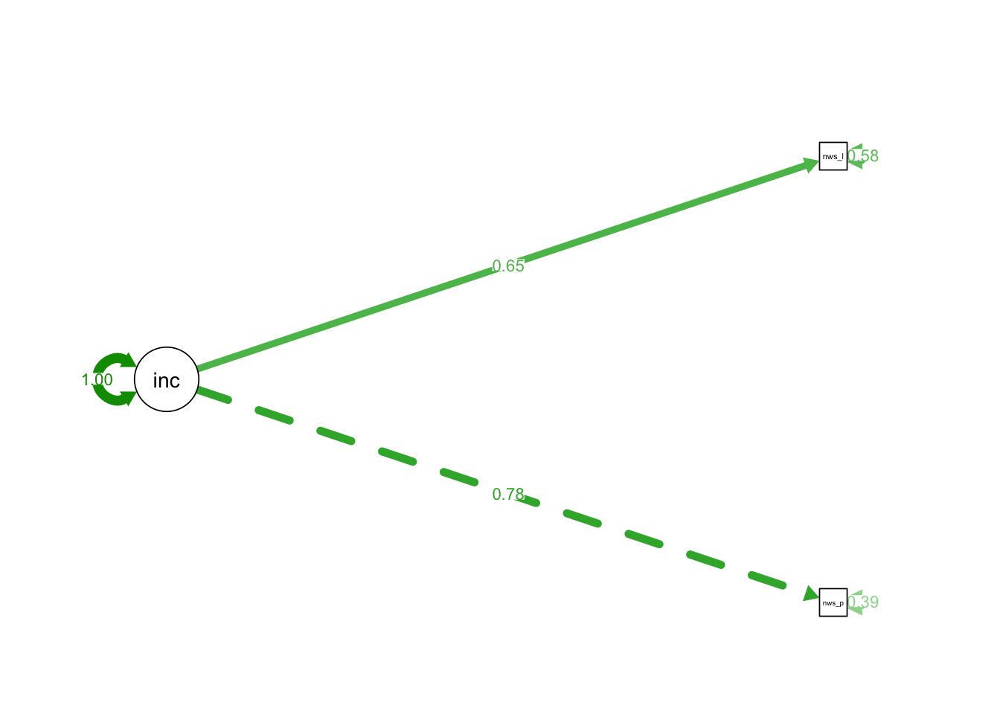
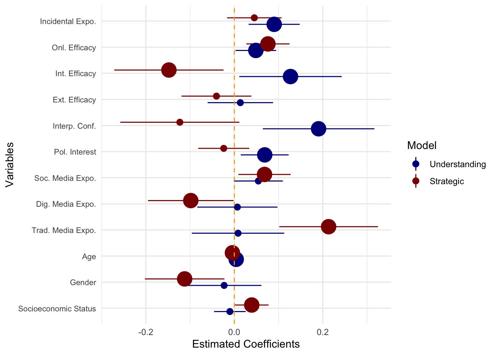
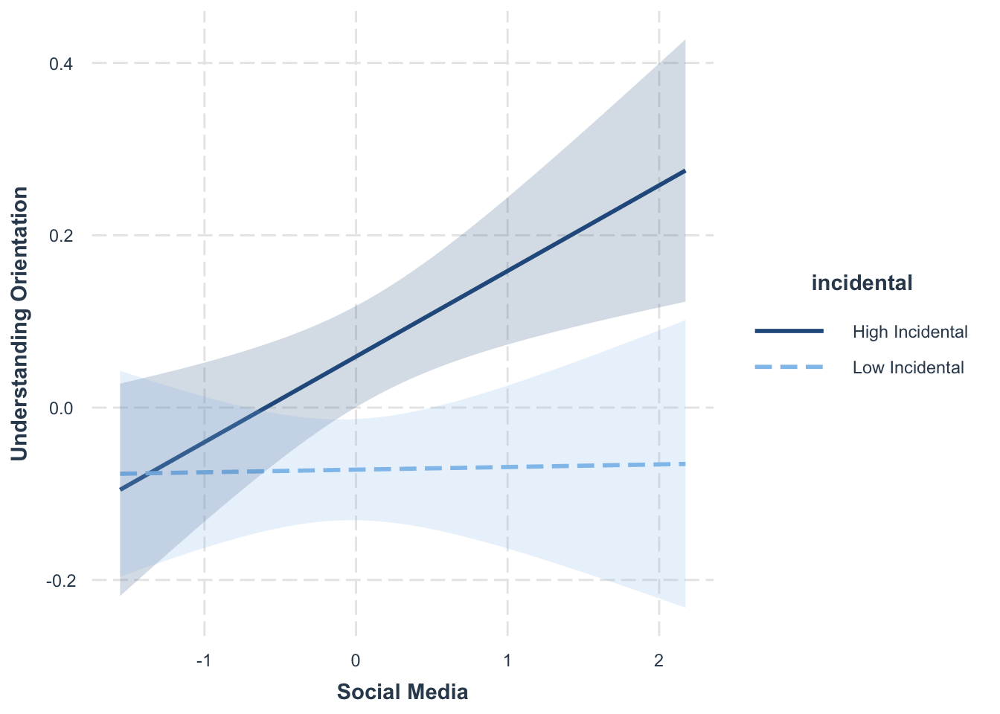

Quarto_Paper_MaC
Democracy and social media: Between the dialogue and the strategy
Andrés Scherman1, Pedro Fierro2 and Leo Yuanliang Shan3
1 LEAS at School of Communication and Journalism, Universidad Adolfo Ibáñez.
2 Business School, Universidad Adolfo Ibáñez; and Department of Media and Communication, London School of Economics.
3 School of Journalism and Mass Communication, University of Wisconsin-Madison.
Abstract
This study analyzes the role of traditional news media and social media in public deliberation within democratic systems. Using the concepts of Understanding Orientation (consensus-oriented, communicative rationality) and Strategic Orientation (goal-oriented, instrumental rationality), proposed by Jürgen Habermas, this study looks at the public space in a digital context to explore how the news media can either contribute to the existence of rational communication in the public debate or, conversely, promote interventions of a strategic nature. To estimate the influence of traditional news media and social media on the orientation to engage in dialogue with others within a framework of rationality and equality, this study relies on a two-wave online panel survey conducted in Chile before and after the constitutional referendum, held on September 4, 2022, a period of intense political polarization. The first wave (T1) received 2,117 responses, and the second wave (T2) received 903 responses. Results show that Understanding Orientation is a predictor of political situations linked to public deliberation, such as Political Participation and Political Interest. However, news consumption in both traditional news outlets and social media is not associated with the presence of Understanding Orientation, but rather with Strategic Orientation. These results support a more pessimistic view of the contribution of the news media and social media to creating a rational public sphere, where reason should predominate in interactions between citizens to strengthen democracy.
Variables
Analysis
Figure 1 Measurement Model for Political Efficacies
Note: Own elaboration.
Figure 2 Measurment model for Media Exposure
Note: Own elaboration.
Figure 3 Measurment model for understanding and strategic orientations

Note: Own elaboration.
Figure 4 Measurment model for incidental exposure

Results
Table 1 OLS Regression for Understanding Orientation.
Call:
lm(formula = under ~ ses + sex + age_num + media + digital +
social + interest + extef + intef + ope + incidental + intercon,
data = merged_data)
Residuals:
Min 1Q Median 3Q Max
-1.77620 -0.31221 0.05235 0.35089 1.18577
Coefficients:
Estimate Std. Error t value Pr(>|t|)
(Intercept) -0.173834 0.108212 -1.606 0.10875
ses -0.010037 0.018207 -0.551 0.58165
sex -0.023023 0.043032 -0.535 0.59285
age_num 0.004276 0.001633 2.619 0.00907 **
media 0.008402 0.053327 0.158 0.87486
digital 0.006900 0.046264 0.149 0.88149
social 0.054330 0.028263 1.922 0.05508 .
interest 0.068748 0.027607 2.490 0.01306 *
extef 0.013629 0.037775 0.361 0.71839
intef 0.127066 0.059108 2.150 0.03201 *
ope 0.048659 0.023404 2.079 0.03806 *
incidental 0.090169 0.029459 3.061 0.00231 **
intercon 0.190562 0.064374 2.960 0.00320 **
---
Signif. codes: 0 '***' 0.001 '**' 0.01 '*' 0.05 '.' 0.1 ' ' 1
Residual standard error: 0.4959 on 559 degrees of freedom
Multiple R-squared: 0.188, Adjusted R-squared: 0.1706
F-statistic: 10.79 on 12 and 559 DF, p-value: < 0.00000000000000022Table 2 OLS Regression for Strategic Orientation.
Call:
lm(formula = strate ~ ses + sex + age_num + media + digital +
social + interest + extef + intef + ope + incidental + intercon,
data = merged_data)
Residuals:
Min 1Q Median 3Q Max
-1.6653 -0.3690 0.0106 0.3131 1.9204
Coefficients:
Estimate Std. Error t value Pr(>|t|)
(Intercept) 0.133802 0.115447 1.159 0.246957
ses 0.039396 0.019424 2.028 0.043012 *
sex -0.112316 0.045909 -2.446 0.014733 *
age_num -0.004295 0.001742 -2.466 0.013979 *
media 0.213210 0.056893 3.748 0.000197 ***
digital -0.098448 0.049358 -1.995 0.046575 *
social 0.068324 0.030153 2.266 0.023839 *
interest -0.023925 0.029453 -0.812 0.416951
extef -0.040396 0.040301 -1.002 0.316598
intef -0.147907 0.063061 -2.345 0.019352 *
ope 0.076033 0.024969 3.045 0.002435 **
incidental 0.045213 0.031429 1.439 0.150823
intercon -0.123223 0.068679 -1.794 0.073322 .
---
Signif. codes: 0 '***' 0.001 '**' 0.01 '*' 0.05 '.' 0.1 ' ' 1
Residual standard error: 0.5291 on 559 degrees of freedom
Multiple R-squared: 0.1229, Adjusted R-squared: 0.1041
F-statistic: 6.53 on 12 and 559 DF, p-value: 0.00000000005728Figure 5 Coefplot for understanding orientation and strategic orientation.

Table 3 Regressions considering interactions
Call:
lm(formula = under ~ ses + sex + age_num + media + digital +
social + interest + extef + intef + ope + incidental + intercon +
incidental * media, data = merged_data)
Residuals:
Min 1Q Median 3Q Max
-1.79747 -0.31421 0.05602 0.34885 1.21127
Coefficients:
Estimate Std. Error t value Pr(>|t|)
(Intercept) -0.178340 0.107118 -1.665 0.096495 .
ses -0.014841 0.018072 -0.821 0.411885
sex -0.019236 0.042607 -0.451 0.651833
age_num 0.004427 0.001617 2.738 0.006378 **
media -0.001407 0.052857 -0.027 0.978777
digital -0.013618 0.046158 -0.295 0.768085
social 0.062981 0.028082 2.243 0.025306 *
interest 0.078465 0.027463 2.857 0.004435 **
extef 0.012956 0.037391 0.347 0.729094
intef 0.128885 0.058509 2.203 0.028015 *
ope 0.051370 0.023178 2.216 0.027072 *
incidental 0.094052 0.029180 3.223 0.001342 **
intercon 0.197160 0.063747 3.093 0.002081 **
media:incidental 0.145817 0.041158 3.543 0.000429 ***
---
Signif. codes: 0 '***' 0.001 '**' 0.01 '*' 0.05 '.' 0.1 ' ' 1
Residual standard error: 0.4909 on 558 degrees of freedom
Multiple R-squared: 0.2059, Adjusted R-squared: 0.1874
F-statistic: 11.13 on 13 and 558 DF, p-value: < 0.00000000000000022
Call:
lm(formula = under ~ ses + sex + age_num + media + digital +
social + interest + extef + intef + ope + incidental + intercon +
incidental * digital, data = merged_data)
Residuals:
Min 1Q Median 3Q Max
-1.78767 -0.31219 0.04435 0.33927 1.16372
Coefficients:
Estimate Std. Error t value Pr(>|t|)
(Intercept) -0.1755097 0.1075214 -1.632 0.10318
ses -0.0123593 0.0181084 -0.683 0.49519
sex -0.0207844 0.0427639 -0.486 0.62714
age_num 0.0042477 0.0016226 2.618 0.00909 **
media -0.0007931 0.0530835 -0.015 0.98809
digital -0.0073320 0.0462361 -0.159 0.87406
social 0.0595306 0.0281413 2.115 0.03484 *
interest 0.0757605 0.0275394 2.751 0.00613 **
extef 0.0153096 0.0375379 0.408 0.68354
intef 0.1358571 0.0588105 2.310 0.02125 *
ope 0.0480213 0.0232550 2.065 0.03939 *
incidental 0.0940689 0.0293021 3.210 0.00140 **
intercon 0.1910195 0.0639632 2.986 0.00295 **
digital:incidental 0.0914287 0.0318973 2.866 0.00431 **
---
Signif. codes: 0 '***' 0.001 '**' 0.01 '*' 0.05 '.' 0.1 ' ' 1
Residual standard error: 0.4928 on 558 degrees of freedom
Multiple R-squared: 0.1998, Adjusted R-squared: 0.1812
F-statistic: 10.72 on 13 and 558 DF, p-value: < 0.00000000000000022
Call:
lm(formula = under ~ ses + sex + age_num + media + digital +
social + interest + extef + intef + ope + incidental + intercon +
incidental * social, data = merged_data)
Residuals:
Min 1Q Median 3Q Max
-1.78934 -0.31137 0.05182 0.33680 1.15676
Coefficients:
Estimate Std. Error t value Pr(>|t|)
(Intercept) -0.182311 0.107831 -1.691 0.09145 .
ses -0.009797 0.018133 -0.540 0.58923
sex -0.019305 0.042885 -0.450 0.65277
age_num 0.004244 0.001626 2.609 0.00932 **
media 0.010046 0.053115 0.189 0.85006
digital 0.004073 0.046092 0.088 0.92961
social 0.051192 0.028180 1.817 0.06981 .
interest 0.071494 0.027519 2.598 0.00963 **
extef 0.009551 0.037661 0.254 0.79988
intef 0.122519 0.058899 2.080 0.03797 *
ope 0.047734 0.023312 2.048 0.04106 *
incidental 0.089722 0.029339 3.058 0.00233 **
intercon 0.199264 0.064218 3.103 0.00201 **
social:incidental 0.065812 0.027858 2.362 0.01850 *
---
Signif. codes: 0 '***' 0.001 '**' 0.01 '*' 0.05 '.' 0.1 ' ' 1
Residual standard error: 0.4939 on 558 degrees of freedom
Multiple R-squared: 0.1961, Adjusted R-squared: 0.1773
F-statistic: 10.47 on 13 and 558 DF, p-value: < 0.00000000000000022
Call:
lm(formula = strate ~ ses + sex + age_num + media + digital +
social + interest + extef + intef + ope + incidental + intercon +
incidental * media, data = merged_data)
Residuals:
Min 1Q Median 3Q Max
-1.6865 -0.3673 0.0198 0.3060 1.9286
Coefficients:
Estimate Std. Error t value Pr(>|t|)
(Intercept) 0.132874 0.115512 1.150 0.250508
ses 0.038408 0.019488 1.971 0.049240 *
sex -0.111537 0.045946 -2.428 0.015516 *
age_num -0.004264 0.001744 -2.446 0.014766 *
media 0.211192 0.056999 3.705 0.000232 ***
digital -0.102670 0.049775 -2.063 0.039606 *
social 0.070104 0.030283 2.315 0.020975 *
interest -0.021926 0.029615 -0.740 0.459392
extef -0.040535 0.040321 -1.005 0.315186
intef -0.147533 0.063094 -2.338 0.019724 *
ope 0.076591 0.024994 3.064 0.002287 **
incidental 0.046012 0.031466 1.462 0.144228
intercon -0.121866 0.068742 -1.773 0.076806 .
media:incidental 0.030004 0.044383 0.676 0.499300
---
Signif. codes: 0 '***' 0.001 '**' 0.01 '*' 0.05 '.' 0.1 ' ' 1
Residual standard error: 0.5294 on 558 degrees of freedom
Multiple R-squared: 0.1237, Adjusted R-squared: 0.1032
F-statistic: 6.057 on 13 and 558 DF, p-value: 0.0000000001245
Call:
lm(formula = strate ~ ses + sex + age_num + media + digital +
social + interest + extef + intef + ope + incidental + intercon +
incidental * digital, data = merged_data)
Residuals:
Min 1Q Median 3Q Max
-1.67324 -0.36476 0.01658 0.30571 1.91695
Coefficients:
Estimate Std. Error t value Pr(>|t|)
(Intercept) 0.133430 0.115516 1.155 0.248553
ses 0.038882 0.019455 1.999 0.046141 *
sex -0.111820 0.045944 -2.434 0.015252 *
age_num -0.004302 0.001743 -2.468 0.013897 *
media 0.211172 0.057031 3.703 0.000234 ***
digital -0.101602 0.049674 -2.045 0.041285 *
social 0.069477 0.030234 2.298 0.021931 *
interest -0.022371 0.029587 -0.756 0.449902
extef -0.040024 0.040329 -0.992 0.321419
intef -0.145958 0.063183 -2.310 0.021248 *
ope 0.075891 0.024984 3.038 0.002496 **
incidental 0.046077 0.031481 1.464 0.143848
intercon -0.123122 0.068719 -1.792 0.073728 .
digital:incidental 0.020264 0.034269 0.591 0.554538
---
Signif. codes: 0 '***' 0.001 '**' 0.01 '*' 0.05 '.' 0.1 ' ' 1
Residual standard error: 0.5294 on 558 degrees of freedom
Multiple R-squared: 0.1235, Adjusted R-squared: 0.1031
F-statistic: 6.047 on 13 and 558 DF, p-value: 0.0000000001304
Call:
lm(formula = strate ~ ses + sex + age_num + media + digital +
social + interest + extef + intef + ope + incidental + intercon +
incidental * social, data = merged_data)
Residuals:
Min 1Q Median 3Q Max
-1.7142 -0.3578 0.0225 0.3158 1.9203
Coefficients:
Estimate Std. Error t value Pr(>|t|)
(Intercept) 0.127173 0.115307 1.103 0.270542
ses 0.039584 0.019390 2.041 0.041672 *
sex -0.109409 0.045859 -2.386 0.017375 *
age_num -0.004321 0.001739 -2.484 0.013269 *
media 0.214495 0.056797 3.776 0.000176 ***
digital -0.100658 0.049287 -2.042 0.041593 *
social 0.065870 0.030133 2.186 0.029234 *
interest -0.021778 0.029427 -0.740 0.459567
extef -0.043584 0.040272 -1.082 0.279606
intef -0.151463 0.062983 -2.405 0.016505 *
ope 0.075310 0.024928 3.021 0.002634 **
incidental 0.044864 0.031374 1.430 0.153282
intercon -0.116419 0.068671 -1.695 0.090570 .
social:incidental 0.051458 0.029790 1.727 0.084659 .
---
Signif. codes: 0 '***' 0.001 '**' 0.01 '*' 0.05 '.' 0.1 ' ' 1
Residual standard error: 0.5282 on 558 degrees of freedom
Multiple R-squared: 0.1276, Adjusted R-squared: 0.1073
F-statistic: 6.278 on 13 and 558 DF, p-value: 0.00000000004178Figure 6 Interactions between incidental exposure and news consumption
Review process R&R
Interactions
library(interactions)
plot1 <- interact_plot(model = model1_int1, pred = "media", modx = "incidental",
interval = TRUE, x.label = "Media", y.label = "Understanding Orientation",
modx.values = "plus-minus", # plots mean +/- 1 SD of incidental
modx.labels = c("Low Incidental", "High Incidental"))
plot2 <- interact_plot(model = model1_int2, pred = "digital", modx = "incidental",
interval = TRUE, x.label = "Digital Media", y.label = "Understanding Orientation",
modx.values = "plus-minus",
modx.labels = c("Low Incidental", "High Incidental"))
plot3 <- interact_plot(model = model1_int3, pred = "social", modx = "incidental",
interval = TRUE, x.label = "Social Media", y.label = "Understanding Orientation",
modx.values = "plus-minus",
modx.labels = c("Low Incidental", "High Incidental"))
# Show plots
plot1plot2
plot3
Correlation Matrix
# List of variables in your model
vars_of_interest <- c("under", "strate", "ses", "sex", "age_num", "media", "digital", "social", "interest", "extef", "intef", "ope", "incidental", "intercon")
# Subset the data
data_subset <- merged_data[ , vars_of_interest]
# Compute correlation matrix (pairwise complete cases)
cor_matrix <- cor(data_subset, use = "pairwise.complete.obs")
# Get correlations + p-values
correlation_results <- corr.test(data_subset, use = "pairwise")
# Print correlation table with stars (psych automatically gives r and p values)
correlation_resultsCall:corr.test(x = data_subset, use = "pairwise")
Correlation matrix
under strate ses sex age_num media digital social interest extef
under 1.00 0.07 -0.11 -0.05 0.16 0.17 0.20 0.20 0.30 -0.12
strate 0.07 1.00 0.14 -0.06 -0.12 0.18 0.13 0.17 -0.08 0.07
ses -0.11 0.14 1.00 0.01 -0.24 -0.10 -0.09 0.04 -0.22 0.14
sex -0.05 -0.06 0.01 1.00 -0.16 -0.04 0.03 0.07 -0.04 0.03
age_num 0.16 -0.12 -0.24 -0.16 1.00 0.13 -0.01 0.00 0.15 -0.22
media 0.17 0.18 -0.10 -0.04 0.13 1.00 0.82 0.54 0.20 0.02
digital 0.20 0.13 -0.09 0.03 -0.01 0.82 1.00 0.67 0.26 0.00
social 0.20 0.17 0.04 0.07 0.00 0.54 0.67 1.00 0.22 0.09
interest 0.30 -0.08 -0.22 -0.04 0.15 0.20 0.26 0.22 1.00 -0.10
extef -0.12 0.07 0.14 0.03 -0.22 0.02 0.00 0.09 -0.10 1.00
intef 0.31 -0.10 -0.20 -0.10 0.23 0.15 0.20 0.10 0.51 -0.64
ope 0.24 0.10 -0.02 -0.02 -0.06 0.14 0.24 0.26 0.32 -0.10
incidental 0.16 0.09 0.04 0.09 -0.03 0.14 0.15 0.13 0.03 -0.15
intercon 0.18 -0.09 -0.07 -0.10 0.06 0.02 0.06 0.02 0.17 0.07
intef ope incidental intercon
under 0.31 0.24 0.16 0.18
strate -0.10 0.10 0.09 -0.09
ses -0.20 -0.02 0.04 -0.07
sex -0.10 -0.02 0.09 -0.10
age_num 0.23 -0.06 -0.03 0.06
media 0.15 0.14 0.14 0.02
digital 0.20 0.24 0.15 0.06
social 0.10 0.26 0.13 0.02
interest 0.51 0.32 0.03 0.17
extef -0.64 -0.10 -0.15 0.07
intef 1.00 0.42 0.15 0.11
ope 0.42 1.00 0.12 0.10
incidental 0.15 0.12 1.00 0.00
intercon 0.11 0.10 0.00 1.00
Sample Size
[1] 572
Probability values (Entries above the diagonal are adjusted for multiple tests.)
under strate ses sex age_num media digital social interest extef
under 0.00 1.00 0.49 1.00 0.00 0.00 0.00 0.00 0.00 0.16
strate 0.07 0.00 0.04 1.00 0.16 0.00 0.12 0.00 1.00 1.00
ses 0.01 0.00 0.00 1.00 0.00 0.64 1.00 1.00 0.00 0.05
sex 0.21 0.12 0.73 0.00 0.01 1.00 1.00 1.00 1.00 1.00
age_num 0.00 0.00 0.00 0.00 0.00 0.09 1.00 1.00 0.02 0.00
media 0.00 0.00 0.02 0.29 0.00 0.00 0.00 0.00 0.00 1.00
digital 0.00 0.00 0.04 0.45 0.77 0.00 0.00 0.00 0.00 1.00
social 0.00 0.00 0.29 0.11 0.92 0.00 0.00 0.00 0.00 1.00
interest 0.00 0.06 0.00 0.34 0.00 0.00 0.00 0.00 0.00 0.77
extef 0.00 0.09 0.00 0.45 0.00 0.70 0.96 0.03 0.02 0.00
intef 0.00 0.02 0.00 0.02 0.00 0.00 0.00 0.02 0.00 0.00
ope 0.00 0.01 0.63 0.69 0.16 0.00 0.00 0.00 0.00 0.01
incidental 0.00 0.04 0.36 0.03 0.42 0.00 0.00 0.00 0.43 0.00
intercon 0.00 0.03 0.08 0.02 0.17 0.61 0.15 0.64 0.00 0.10
intef ope incidental intercon
under 0.00 0.00 0.00 0.00
strate 0.68 0.58 1.00 0.86
ses 0.00 1.00 1.00 1.00
sex 0.77 1.00 1.00 0.77
age_num 0.00 1.00 1.00 1.00
media 0.01 0.04 0.04 1.00
digital 0.00 0.00 0.02 1.00
social 0.64 0.00 0.10 1.00
interest 0.00 0.00 1.00 0.00
extef 0.00 0.61 0.02 1.00
intef 0.00 0.00 0.02 0.29
ope 0.00 0.00 0.23 0.61
incidental 0.00 0.01 0.00 1.00
intercon 0.01 0.01 0.94 0.00
To see confidence intervals of the correlations, print with the short=FALSE optioncorstars <- function(x) {
require(Hmisc)
x <- as.matrix(x)
R <- rcorr(x)$r
p <- rcorr(x)$P
# define significance levels
stars <- ifelse(p < .001, "***", ifelse(p < .01, "**", ifelse(p < .05, "*", "")))
# format matrix
R <- format(round(R, 2))
Rnew <- matrix(paste(R, stars, sep=" "), ncol=ncol(R))
dimnames(Rnew) <- dimnames(R)
Rnew
}
# Apply function
corstars(data_subset) under strate ses sex age_num
under " 1.00 NA" " 0.07 " "-0.11 *" "-0.05 " " 0.16 ***"
strate " 0.07 " " 1.00 NA" " 0.14 ***" "-0.06 " "-0.12 **"
ses "-0.11 *" " 0.14 ***" " 1.00 NA" " 0.01 " "-0.24 ***"
sex "-0.05 " "-0.06 " " 0.01 " " 1.00 NA" "-0.16 ***"
age_num " 0.16 ***" "-0.12 **" "-0.24 ***" "-0.16 ***" " 1.00 NA"
media " 0.17 ***" " 0.18 ***" "-0.10 *" "-0.04 " " 0.13 **"
digital " 0.20 ***" " 0.13 **" "-0.09 *" " 0.03 " "-0.01 "
social " 0.20 ***" " 0.17 ***" " 0.04 " " 0.07 " " 0.00 "
interest " 0.30 ***" "-0.08 " "-0.22 ***" "-0.04 " " 0.15 ***"
extef "-0.12 **" " 0.07 " " 0.14 ***" " 0.03 " "-0.22 ***"
intef " 0.31 ***" "-0.10 *" "-0.20 ***" "-0.10 *" " 0.23 ***"
ope " 0.24 ***" " 0.10 *" "-0.02 " "-0.02 " "-0.06 "
incidental " 0.16 ***" " 0.09 *" " 0.04 " " 0.09 *" "-0.03 "
intercon " 0.18 ***" "-0.09 *" "-0.07 " "-0.10 *" " 0.06 "
media digital social interest extef
under " 0.17 ***" " 0.20 ***" " 0.20 ***" " 0.30 ***" "-0.12 **"
strate " 0.18 ***" " 0.13 **" " 0.17 ***" "-0.08 " " 0.07 "
ses "-0.10 *" "-0.09 *" " 0.04 " "-0.22 ***" " 0.14 ***"
sex "-0.04 " " 0.03 " " 0.07 " "-0.04 " " 0.03 "
age_num " 0.13 **" "-0.01 " " 0.00 " " 0.15 ***" "-0.22 ***"
media " 1.00 NA" " 0.82 ***" " 0.54 ***" " 0.20 ***" " 0.02 "
digital " 0.82 ***" " 1.00 NA" " 0.67 ***" " 0.26 ***" " 0.00 "
social " 0.54 ***" " 0.67 ***" " 1.00 NA" " 0.22 ***" " 0.09 *"
interest " 0.20 ***" " 0.26 ***" " 0.22 ***" " 1.00 NA" "-0.10 *"
extef " 0.02 " " 0.00 " " 0.09 *" "-0.10 *" " 1.00 NA"
intef " 0.15 ***" " 0.20 ***" " 0.10 *" " 0.51 ***" "-0.64 ***"
ope " 0.14 ***" " 0.24 ***" " 0.26 ***" " 0.32 ***" "-0.10 *"
incidental " 0.14 ***" " 0.15 ***" " 0.13 **" " 0.03 " "-0.15 ***"
intercon " 0.02 " " 0.06 " " 0.02 " " 0.17 ***" " 0.07 "
intef ope incidental intercon
under " 0.31 ***" " 0.24 ***" " 0.16 ***" " 0.18 ***"
strate "-0.10 *" " 0.10 *" " 0.09 *" "-0.09 *"
ses "-0.20 ***" "-0.02 " " 0.04 " "-0.07 "
sex "-0.10 *" "-0.02 " " 0.09 *" "-0.10 *"
age_num " 0.23 ***" "-0.06 " "-0.03 " " 0.06 "
media " 0.15 ***" " 0.14 ***" " 0.14 ***" " 0.02 "
digital " 0.20 ***" " 0.24 ***" " 0.15 ***" " 0.06 "
social " 0.10 *" " 0.26 ***" " 0.13 **" " 0.02 "
interest " 0.51 ***" " 0.32 ***" " 0.03 " " 0.17 ***"
extef "-0.64 ***" "-0.10 *" "-0.15 ***" " 0.07 "
intef " 1.00 NA" " 0.42 ***" " 0.15 ***" " 0.11 **"
ope " 0.42 ***" " 1.00 NA" " 0.12 **" " 0.10 *"
incidental " 0.15 ***" " 0.12 **" " 1.00 NA" " 0.00 "
intercon " 0.11 **" " 0.10 *" " 0.00 " " 1.00 NA" Testing multicolinearity
model1_mul1 <- lm(under ~ ses + sex + age_num + media + interest + extef + intef + ope + incidental + intercon, data = merged_data)
summary(model1_mul1)
Call:
lm(formula = under ~ ses + sex + age_num + media + interest +
extef + intef + ope + incidental + intercon, data = merged_data)
Residuals:
Min 1Q Median 3Q Max
-1.7465 -0.3074 0.0518 0.3552 1.1662
Coefficients:
Estimate Std. Error t value Pr(>|t|)
(Intercept) -0.187384 0.106473 -1.760 0.07897 .
ses -0.005561 0.018072 -0.308 0.75843
sex -0.013082 0.042842 -0.305 0.76020
age_num 0.004163 0.001595 2.611 0.00927 **
media 0.055447 0.030846 1.798 0.07279 .
interest 0.075857 0.027441 2.764 0.00589 **
extef 0.018984 0.037758 0.503 0.61531
intef 0.124852 0.059197 2.109 0.03538 *
ope 0.057985 0.023072 2.513 0.01224 *
incidental 0.093302 0.029503 3.163 0.00165 **
intercon 0.188870 0.064378 2.934 0.00349 **
---
Signif. codes: 0 '***' 0.001 '**' 0.01 '*' 0.05 '.' 0.1 ' ' 1
Residual standard error: 0.4972 on 561 degrees of freedom
Multiple R-squared: 0.1808, Adjusted R-squared: 0.1662
F-statistic: 12.38 on 10 and 561 DF, p-value: < 0.00000000000000022model1_mul2 <- lm(under ~ ses + sex + age_num + digital + interest + extef + intef + ope + incidental + intercon, data = merged_data)
summary(model1_mul2)
Call:
lm(formula = under ~ ses + sex + age_num + digital + interest +
extef + intef + ope + incidental + intercon, data = merged_data)
Residuals:
Min 1Q Median 3Q Max
-1.7423 -0.3005 0.0528 0.3516 1.1659
Coefficients:
Estimate Std. Error t value Pr(>|t|)
(Intercept) -0.204918 0.106393 -1.926 0.05460 .
ses -0.005182 0.018054 -0.287 0.77418
sex -0.018523 0.042799 -0.433 0.66533
age_num 0.004595 0.001583 2.902 0.00385 **
digital 0.050671 0.023932 2.117 0.03467 *
interest 0.072238 0.027555 2.622 0.00899 **
extef 0.019644 0.037602 0.522 0.60158
intef 0.123019 0.059146 2.080 0.03799 *
ope 0.054626 0.023171 2.357 0.01874 *
incidental 0.092781 0.029415 3.154 0.00170 **
intercon 0.184346 0.064249 2.869 0.00427 **
---
Signif. codes: 0 '***' 0.001 '**' 0.01 '*' 0.05 '.' 0.1 ' ' 1
Residual standard error: 0.4967 on 561 degrees of freedom
Multiple R-squared: 0.1826, Adjusted R-squared: 0.1681
F-statistic: 12.54 on 10 and 561 DF, p-value: < 0.00000000000000022model1_mul3 <- lm(under ~ ses + sex + age_num + social + interest + extef + intef + ope + incidental + intercon, data = merged_data)
summary(model1_mul3)
Call:
lm(formula = under ~ ses + sex + age_num + social + interest +
extef + intef + ope + incidental + intercon, data = merged_data)
Residuals:
Min 1Q Median 3Q Max
-1.77283 -0.31907 0.05316 0.34817 1.17873
Coefficients:
Estimate Std. Error t value Pr(>|t|)
(Intercept) -0.170772 0.106277 -1.607 0.10865
ses -0.011028 0.018014 -0.612 0.54065
sex -0.023940 0.042745 -0.560 0.57565
age_num 0.004288 0.001579 2.715 0.00683 **
social 0.061400 0.021637 2.838 0.00471 **
interest 0.069147 0.027494 2.515 0.01218 *
extef 0.014485 0.037582 0.385 0.70007
intef 0.129230 0.058787 2.198 0.02834 *
ope 0.048459 0.023322 2.078 0.03818 *
incidental 0.091346 0.029264 3.121 0.00189 **
intercon 0.190520 0.064089 2.973 0.00308 **
---
Signif. codes: 0 '***' 0.001 '**' 0.01 '*' 0.05 '.' 0.1 ' ' 1
Residual standard error: 0.4951 on 561 degrees of freedom
Multiple R-squared: 0.1878, Adjusted R-squared: 0.1733
F-statistic: 12.97 on 10 and 561 DF, p-value: < 0.00000000000000022Appendix
Appendix 1 SEM for Understanding Orientation
lavaan 0.6.16 ended normally after 69 iterations
Estimator ML
Optimization method NLMINB
Number of model parameters 114
Number of observations 572
Model Test User Model:
Test statistic 2085.428
Degrees of freedom 737
P-value (Chi-square) 0.000
Model Test Baseline Model:
Test statistic 9766.153
Degrees of freedom 814
P-value 0.000
User Model versus Baseline Model:
Comparative Fit Index (CFI) 0.849
Tucker-Lewis Index (TLI) 0.834
Loglikelihood and Information Criteria:
Loglikelihood user model (H0) -32056.962
Loglikelihood unrestricted model (H1) -31014.247
Akaike (AIC) 64341.923
Bayesian (BIC) 64837.725
Sample-size adjusted Bayesian (SABIC) 64475.825
Root Mean Square Error of Approximation:
RMSEA 0.057
90 Percent confidence interval - lower 0.054
90 Percent confidence interval - upper 0.059
P-value H_0: RMSEA <= 0.050 0.000
P-value H_0: RMSEA >= 0.080 0.000
Standardized Root Mean Square Residual:
SRMR 0.061
Parameter Estimates:
Standard errors Standard
Information Expected
Information saturated (h1) model Structured
Latent Variables:
Estimate Std.Err z-value P(>|z|) Std.lv Std.all
ope_a1 =~
ope1 1.000 1.110 0.854
ope2 1.000 0.045 22.225 0.000 1.109 0.853
ope3 0.759 0.047 16.172 0.000 0.843 0.646
ope4 0.774 0.045 17.075 0.000 0.859 0.674
intef_a1 =~
intef1 1.000 0.678 0.549
intef2 1.387 0.117 11.807 0.000 0.940 0.743
intef3 1.471 0.121 12.136 0.000 0.997 0.826
extef_a1 =~
extef1 1.000 0.917 0.726
extef2 0.983 0.075 13.075 0.000 0.901 0.737
extef3 0.941 0.077 12.235 0.000 0.862 0.638
interest_a1 =~
polint 1.000 1.004 0.687
procint 1.359 0.070 19.470 0.000 1.364 0.910
plebint 1.398 0.071 19.557 0.000 1.404 0.932
media_a1 =~
tv 1.000 0.803 0.540
cable 1.201 0.115 10.481 0.000 0.964 0.660
newspaper 1.143 0.106 10.777 0.000 0.918 0.701
radio 1.180 0.112 10.497 0.000 0.948 0.662
digital_a1 =~
tradonline 1.000 1.013 0.733
online 1.026 0.067 15.391 0.000 1.039 0.744
podcast 0.695 0.055 12.637 0.000 0.704 0.594
officialsm 0.888 0.068 13.018 0.000 0.900 0.613
social_a1 =~
fb 1.000 1.112 0.706
insta 1.035 0.066 15.774 0.000 1.152 0.741
twitter 0.827 0.065 12.698 0.000 0.920 0.585
whatsapp 1.096 0.070 15.764 0.000 1.219 0.740
youtube 0.968 0.064 15.061 0.000 1.076 0.703
tiktok 0.852 0.063 13.629 0.000 0.947 0.631
under_a1 =~
under_w3_1 1.000 0.573 0.564
under_w3_2 1.047 0.107 9.792 0.000 0.600 0.496
under_w3_3 1.152 0.100 11.537 0.000 0.661 0.622
under_w3_4 1.428 0.118 12.091 0.000 0.818 0.668
under_w3_5 1.148 0.107 10.687 0.000 0.658 0.558
under_w3_6 1.561 0.119 13.094 0.000 0.895 0.761
under_w3_7 1.632 0.121 13.482 0.000 0.936 0.803
under_w3_8 1.584 0.120 13.247 0.000 0.908 0.777
incidental_a1 =~
news_pleb 1.000 0.737 0.658
news_elec 1.151 0.202 5.697 0.000 0.848 0.768
Regressions:
Estimate Std.Err z-value P(>|z|) Std.lv Std.all
under_a1 ~
ses -0.013 0.020 -0.647 0.518 -0.022 -0.027
sex -0.026 0.047 -0.550 0.582 -0.046 -0.023
age_num 0.005 0.002 2.932 0.003 0.009 0.126
media_a1 0.002 0.058 0.027 0.979 0.002 0.002
digital_a1 0.004 0.052 0.076 0.940 0.007 0.007
social_a1 0.057 0.032 1.761 0.078 0.111 0.111
interest_a1 0.080 0.031 2.571 0.010 0.141 0.141
incidental_a1 0.139 0.043 3.224 0.001 0.179 0.179
intercon 0.210 0.071 2.937 0.003 0.365 0.122
extef_a1 0.021 0.042 0.487 0.626 0.033 0.033
intef_a1 0.139 0.068 2.044 0.041 0.165 0.165
ope_a1 0.051 0.027 1.852 0.064 0.098 0.098
Covariances:
Estimate Std.Err z-value P(>|z|) Std.lv Std.all
ope_a1 ~~
intef_a1 0.273 0.044 6.175 0.000 0.363 0.363
extef_a1 -0.083 0.053 -1.566 0.117 -0.081 -0.081
interest_a1 0.326 0.056 5.804 0.000 0.292 0.292
media_a1 0.090 0.047 1.920 0.055 0.101 0.101
digital_a1 0.304 0.060 5.070 0.000 0.270 0.270
social_a1 0.350 0.064 5.467 0.000 0.284 0.284
incidental_a1 0.132 0.047 2.795 0.005 0.161 0.161
intef_a1 ~~
extef_a1 -0.340 0.046 -7.430 0.000 -0.548 -0.548
interest_a1 0.309 0.044 7.064 0.000 0.455 0.455
media_a1 0.087 0.031 2.789 0.005 0.159 0.159
digital_a1 0.163 0.039 4.143 0.000 0.237 0.237
social_a1 0.061 0.039 1.582 0.114 0.082 0.082
incidental_a1 0.105 0.032 3.282 0.001 0.209 0.209
extef_a1 ~~
interest_a1 -0.072 0.047 -1.557 0.120 -0.079 -0.079
media_a1 0.035 0.041 0.857 0.391 0.048 0.048
digital_a1 0.004 0.051 0.074 0.941 0.004 0.004
social_a1 0.134 0.054 2.460 0.014 0.131 0.131
incidental_a1 -0.127 0.043 -2.984 0.003 -0.188 -0.188
interest_a1 ~~
media_a1 0.144 0.043 3.359 0.001 0.178 0.178
digital_a1 0.298 0.054 5.478 0.000 0.294 0.294
social_a1 0.251 0.056 4.484 0.000 0.225 0.225
incidental_a1 0.039 0.039 1.002 0.316 0.053 0.053
media_a1 ~~
digital_a1 0.569 0.068 8.346 0.000 0.699 0.699
social_a1 0.401 0.060 6.693 0.000 0.448 0.448
incidental_a1 0.095 0.037 2.552 0.011 0.160 0.160
digital_a1 ~~
social_a1 0.658 0.074 8.870 0.000 0.585 0.585
incidental_a1 0.133 0.046 2.904 0.004 0.179 0.179
social_a1 ~~
incidental_a1 0.136 0.048 2.826 0.005 0.166 0.166
Variances:
Estimate Std.Err z-value P(>|z|) Std.lv Std.all
.ope1 0.457 0.046 9.836 0.000 0.457 0.271
.ope2 0.460 0.047 9.880 0.000 0.460 0.272
.ope3 0.993 0.065 15.177 0.000 0.993 0.583
.ope4 0.884 0.059 14.875 0.000 0.884 0.545
.intef1 1.064 0.070 15.288 0.000 1.064 0.699
.intef2 0.718 0.061 11.853 0.000 0.718 0.449
.intef3 0.461 0.054 8.502 0.000 0.461 0.317
.extef1 0.754 0.069 10.873 0.000 0.754 0.473
.extef2 0.684 0.065 10.505 0.000 0.684 0.457
.extef3 1.086 0.082 13.302 0.000 1.086 0.594
.polint 1.130 0.072 15.658 0.000 1.130 0.529
.procint 0.388 0.050 7.752 0.000 0.388 0.173
.plebint 0.299 0.050 5.955 0.000 0.299 0.132
.tv 1.569 0.105 14.964 0.000 1.569 0.709
.cable 1.202 0.091 13.193 0.000 1.202 0.564
.newspaper 0.872 0.071 12.256 0.000 0.872 0.509
.radio 1.149 0.087 13.152 0.000 1.149 0.561
.tradonline 0.881 0.071 12.493 0.000 0.881 0.462
.online 0.870 0.071 12.201 0.000 0.870 0.446
.podcast 0.910 0.061 14.884 0.000 0.910 0.648
.officialsm 1.347 0.092 14.668 0.000 1.347 0.625
.fb 1.245 0.088 14.110 0.000 1.245 0.502
.insta 1.092 0.081 13.480 0.000 1.092 0.452
.twitter 1.624 0.105 15.452 0.000 1.624 0.657
.whatsapp 1.228 0.091 13.491 0.000 1.228 0.452
.youtube 1.185 0.084 14.157 0.000 1.185 0.506
.tiktok 1.357 0.090 15.056 0.000 1.357 0.602
.under_w3_1 0.704 0.044 15.872 0.000 0.704 0.682
.under_w3_2 1.104 0.068 16.186 0.000 1.104 0.754
.under_w3_3 0.692 0.045 15.504 0.000 0.692 0.613
.under_w3_4 0.833 0.055 15.112 0.000 0.833 0.554
.under_w3_5 0.960 0.060 15.907 0.000 0.960 0.689
.under_w3_6 0.581 0.042 13.806 0.000 0.581 0.421
.under_w3_7 0.482 0.038 12.814 0.000 0.482 0.355
.under_w3_8 0.541 0.040 13.470 0.000 0.541 0.396
.news_pleb 0.711 0.101 7.002 0.000 0.711 0.567
.news_elec 0.500 0.126 3.977 0.000 0.500 0.410
ope_a1 1.232 0.103 11.922 0.000 1.000 1.000
intef_a1 0.459 0.071 6.469 0.000 1.000 1.000
extef_a1 0.841 0.099 8.526 0.000 1.000 1.000
interest_a1 1.008 0.111 9.103 0.000 1.000 1.000
media_a1 0.645 0.104 6.173 0.000 1.000 1.000
digital_a1 1.026 0.111 9.263 0.000 1.000 1.000
social_a1 1.237 0.136 9.098 0.000 1.000 1.000
.under_a1 0.257 0.037 6.859 0.000 0.781 0.781
incidental_a1 0.543 0.111 4.907 0.000 1.000 1.000Appendix 2 SEM for Strategic Orientation
lavaan 0.6.16 ended normally after 78 iterations
Estimator ML
Optimization method NLMINB
Number of model parameters 114
Number of observations 572
Model Test User Model:
Test statistic 2081.711
Degrees of freedom 737
P-value (Chi-square) 0.000
Model Test Baseline Model:
Test statistic 8748.547
Degrees of freedom 814
P-value 0.000
User Model versus Baseline Model:
Comparative Fit Index (CFI) 0.831
Tucker-Lewis Index (TLI) 0.813
Loglikelihood and Information Criteria:
Loglikelihood user model (H0) -33156.901
Loglikelihood unrestricted model (H1) -32116.046
Akaike (AIC) 66541.802
Bayesian (BIC) 67037.604
Sample-size adjusted Bayesian (SABIC) 66675.704
Root Mean Square Error of Approximation:
RMSEA 0.056
90 Percent confidence interval - lower 0.054
90 Percent confidence interval - upper 0.059
P-value H_0: RMSEA <= 0.050 0.000
P-value H_0: RMSEA >= 0.080 0.000
Standardized Root Mean Square Residual:
SRMR 0.063
Parameter Estimates:
Standard errors Standard
Information Expected
Information saturated (h1) model Structured
Latent Variables:
Estimate Std.Err z-value P(>|z|) Std.lv Std.all
ope_a2 =~
ope1 1.000 1.110 0.854
ope2 0.998 0.045 22.201 0.000 1.107 0.852
ope3 0.759 0.047 16.158 0.000 0.842 0.645
ope4 0.776 0.045 17.149 0.000 0.862 0.677
intef_a2 =~
intef1 1.000 0.681 0.552
intef2 1.383 0.117 11.858 0.000 0.942 0.744
intef3 1.457 0.120 12.175 0.000 0.992 0.823
extef_a2 =~
extef1 1.000 0.917 0.727
extef2 0.981 0.075 13.085 0.000 0.900 0.735
extef3 0.942 0.077 12.258 0.000 0.864 0.639
interest_a2 =~
polint 1.000 1.003 0.686
procint 1.360 0.070 19.422 0.000 1.363 0.909
plebint 1.402 0.072 19.507 0.000 1.405 0.933
media_a2 =~
tv 1.000 0.808 0.543
cable 1.203 0.113 10.632 0.000 0.972 0.666
newspaper 1.134 0.104 10.886 0.000 0.916 0.700
radio 1.163 0.110 10.554 0.000 0.939 0.657
digital_a2 =~
tradonline 1.000 1.012 0.733
online 1.024 0.067 15.353 0.000 1.036 0.742
podcast 0.695 0.055 12.623 0.000 0.703 0.593
officialsm 0.892 0.068 13.059 0.000 0.903 0.615
social_a2 =~
fb 1.000 1.115 0.708
insta 1.030 0.065 15.769 0.000 1.148 0.738
twitter 0.823 0.065 12.682 0.000 0.917 0.584
whatsapp 1.095 0.069 15.820 0.000 1.221 0.741
youtube 0.967 0.064 15.107 0.000 1.077 0.704
tiktok 0.851 0.062 13.665 0.000 0.948 0.632
strate_a2 =~
strate_w3_1 1.000 0.649 0.511
strate_w3_2 1.075 0.119 9.069 0.000 0.698 0.561
strate_w3_3 0.987 0.121 8.157 0.000 0.641 0.473
strate_w3_4 1.038 0.123 8.460 0.000 0.674 0.501
strate_w3_5 0.647 0.102 6.316 0.000 0.420 0.335
strate_w3_6 1.226 0.131 9.342 0.000 0.796 0.592
strate_w3_7 1.022 0.123 8.308 0.000 0.663 0.487
strate_w3_8 1.358 0.138 9.828 0.000 0.881 0.656
incidental_a2 =~
news_pleb 1.000 0.824 0.736
news_elec 0.921 0.181 5.098 0.000 0.759 0.687
Regressions:
Estimate Std.Err z-value P(>|z|) Std.lv Std.all
strate_a2 ~
ses 0.053 0.025 2.096 0.036 0.081 0.099
sex -0.155 0.061 -2.548 0.011 -0.239 -0.119
age_num -0.006 0.002 -2.760 0.006 -0.009 -0.133
media_a2 0.295 0.081 3.658 0.000 0.367 0.367
digital_a2 -0.136 0.068 -1.988 0.047 -0.211 -0.211
social_a2 0.084 0.041 2.031 0.042 0.145 0.145
interest_a2 -0.031 0.039 -0.790 0.430 -0.048 -0.048
incidental_a2 0.048 0.048 1.010 0.312 0.061 0.061
intercon -0.171 0.089 -1.915 0.056 -0.263 -0.088
extef_a2 -0.062 0.055 -1.129 0.259 -0.087 -0.087
intef_a2 -0.211 0.088 -2.397 0.017 -0.222 -0.222
ope_a2 0.112 0.036 3.133 0.002 0.192 0.192
Covariances:
Estimate Std.Err z-value P(>|z|) Std.lv Std.all
ope_a2 ~~
intef_a2 0.274 0.044 6.179 0.000 0.363 0.363
extef_a2 -0.083 0.053 -1.564 0.118 -0.081 -0.081
interest_a2 0.325 0.056 5.801 0.000 0.292 0.292
media_a2 0.091 0.047 1.927 0.054 0.101 0.101
digital_a2 0.304 0.060 5.070 0.000 0.270 0.270
social_a2 0.351 0.064 5.468 0.000 0.284 0.284
incidental_a2 0.142 0.052 2.745 0.006 0.155 0.155
intef_a2 ~~
extef_a2 -0.343 0.046 -7.451 0.000 -0.549 -0.549
interest_a2 0.311 0.044 7.079 0.000 0.456 0.456
media_a2 0.088 0.031 2.806 0.005 0.160 0.160
digital_a2 0.164 0.039 4.144 0.000 0.237 0.237
social_a2 0.061 0.039 1.570 0.116 0.081 0.081
incidental_a2 0.111 0.035 3.215 0.001 0.198 0.198
extef_a2 ~~
interest_a2 -0.073 0.047 -1.564 0.118 -0.079 -0.079
media_a2 0.036 0.042 0.860 0.390 0.048 0.048
digital_a2 0.004 0.051 0.075 0.940 0.004 0.004
social_a2 0.134 0.055 2.458 0.014 0.131 0.131
incidental_a2 -0.148 0.047 -3.155 0.002 -0.196 -0.196
interest_a2 ~~
media_a2 0.145 0.043 3.369 0.001 0.179 0.179
digital_a2 0.298 0.054 5.476 0.000 0.293 0.293
social_a2 0.251 0.056 4.480 0.000 0.224 0.224
incidental_a2 0.035 0.044 0.800 0.424 0.042 0.042
media_a2 ~~
digital_a2 0.571 0.068 8.376 0.000 0.698 0.698
social_a2 0.405 0.060 6.728 0.000 0.450 0.450
incidental_a2 0.113 0.041 2.724 0.006 0.169 0.169
digital_a2 ~~
social_a2 0.660 0.074 8.880 0.000 0.585 0.585
incidental_a2 0.156 0.051 3.081 0.002 0.187 0.187
social_a2 ~~
incidental_a2 0.151 0.053 2.836 0.005 0.164 0.164
Variances:
Estimate Std.Err z-value P(>|z|) Std.lv Std.all
.ope1 0.457 0.046 9.830 0.000 0.457 0.270
.ope2 0.464 0.047 9.957 0.000 0.464 0.275
.ope3 0.994 0.066 15.178 0.000 0.994 0.584
.ope4 0.878 0.059 14.844 0.000 0.878 0.542
.intef1 1.059 0.069 15.252 0.000 1.059 0.695
.intef2 0.715 0.061 11.787 0.000 0.715 0.446
.intef3 0.469 0.054 8.646 0.000 0.469 0.323
.extef1 0.753 0.069 10.872 0.000 0.753 0.472
.extef2 0.687 0.065 10.568 0.000 0.687 0.459
.extef3 1.083 0.082 13.283 0.000 1.083 0.592
.polint 1.133 0.072 15.666 0.000 1.133 0.530
.procint 0.391 0.050 7.747 0.000 0.391 0.174
.plebint 0.295 0.051 5.831 0.000 0.295 0.130
.tv 1.561 0.104 14.975 0.000 1.561 0.705
.cable 1.186 0.090 13.168 0.000 1.186 0.556
.newspaper 0.875 0.071 12.396 0.000 0.875 0.510
.radio 1.165 0.087 13.358 0.000 1.165 0.569
.tradonline 0.882 0.071 12.498 0.000 0.882 0.463
.online 0.875 0.071 12.246 0.000 0.875 0.449
.podcast 0.911 0.061 14.885 0.000 0.911 0.648
.officialsm 1.340 0.092 14.635 0.000 1.340 0.622
.fb 1.239 0.088 14.088 0.000 1.239 0.499
.insta 1.100 0.081 13.530 0.000 1.100 0.455
.twitter 1.629 0.105 15.467 0.000 1.629 0.659
.whatsapp 1.224 0.091 13.474 0.000 1.224 0.451
.youtube 1.183 0.084 14.149 0.000 1.183 0.505
.tiktok 1.355 0.090 15.052 0.000 1.355 0.601
.strate_w3_1 1.188 0.079 15.109 0.000 1.188 0.738
.strate_w3_2 1.058 0.073 14.567 0.000 1.058 0.685
.strate_w3_3 1.421 0.092 15.445 0.000 1.421 0.776
.strate_w3_4 1.357 0.089 15.211 0.000 1.357 0.749
.strate_w3_5 1.393 0.086 16.272 0.000 1.393 0.888
.strate_w3_6 1.173 0.083 14.155 0.000 1.173 0.650
.strate_w3_7 1.416 0.092 15.335 0.000 1.416 0.763
.strate_w3_8 1.030 0.079 13.058 0.000 1.030 0.570
.news_pleb 0.575 0.134 4.275 0.000 0.575 0.458
.news_elec 0.644 0.117 5.523 0.000 0.644 0.528
ope_a2 1.232 0.103 11.928 0.000 1.000 1.000
intef_a2 0.464 0.071 6.503 0.000 1.000 1.000
extef_a2 0.842 0.099 8.536 0.000 1.000 1.000
interest_a2 1.005 0.111 9.086 0.000 1.000 1.000
media_a2 0.653 0.105 6.236 0.000 1.000 1.000
digital_a2 1.025 0.111 9.256 0.000 1.000 1.000
social_a2 1.242 0.136 9.126 0.000 1.000 1.000
.strate_a2 0.335 0.060 5.577 0.000 0.796 0.796
incidental_a2 0.679 0.146 4.657 0.000 1.000 1.000Working with W1
Appendix 3. OLS for Understanding Orientation just using W1.
Call:
lm(formula = under_1 ~ ses + sex + age_num + media_1 + digital_1 +
social_1 + interest_1 + intercon + extef_1 + intef_1 + ope_1,
data = data_justw1_na)
Residuals:
Min 1Q Median 3Q Max
-2.49417 -0.36644 0.04804 0.40449 1.86981
Coefficients:
Estimate Std. Error t value Pr(>|t|)
(Intercept) -0.112761 0.078035 -1.445 0.14869
ses -0.007048 0.013548 -0.520 0.60299
sex 0.010200 0.030837 0.331 0.74086
age_num 0.002752 0.001143 2.408 0.01617 *
media_1 0.034251 0.038221 0.896 0.37034
digital_1 0.056332 0.035766 1.575 0.11549
social_1 -0.004627 0.023972 -0.193 0.84699
interest_1 0.197071 0.020292 9.712 < 0.0000000000000002 ***
intercon 0.084182 0.047030 1.790 0.07368 .
extef_1 -0.074802 0.025581 -2.924 0.00351 **
intef_1 0.081919 0.042773 1.915 0.05567 .
ope_1 0.099274 0.018039 5.503 0.0000000445 ***
---
Signif. codes: 0 '***' 0.001 '**' 0.01 '*' 0.05 '.' 0.1 ' ' 1
Residual standard error: 0.5604 on 1365 degrees of freedom
Multiple R-squared: 0.2616, Adjusted R-squared: 0.2556
F-statistic: 43.96 on 11 and 1365 DF, p-value: < 0.00000000000000022Appendix 4. OLS for Strategic Orientation just using W1.
Call:
lm(formula = strate_1 ~ ses + sex + age_num + media_1 + digital_1 +
social_1 + interest_1 + intercon + extef_1 + intef_1 + ope_1,
data = data_justw1_na)
Residuals:
Min 1Q Median 3Q Max
-1.13516 -0.30497 0.02747 0.27601 1.54873
Coefficients:
Estimate Std. Error t value Pr(>|t|)
(Intercept) -0.0752466 0.0588454 -1.279 0.201214
ses 0.0299412 0.0102160 2.931 0.003437 **
sex 0.0064777 0.0232537 0.279 0.780620
age_num -0.0002269 0.0008618 -0.263 0.792387
media_1 0.0723703 0.0288224 2.511 0.012157 *
digital_1 -0.0015713 0.0269711 -0.058 0.953551
social_1 0.0218022 0.0180770 1.206 0.227999
interest_1 -0.0198537 0.0153017 -1.297 0.194684
intercon -0.1190581 0.0354647 -3.357 0.000809 ***
extef_1 -0.0489088 0.0192902 -2.535 0.011342 *
intef_1 -0.0623574 0.0322543 -1.933 0.053405 .
ope_1 0.0752496 0.0136028 5.532 0.0000000379 ***
---
Signif. codes: 0 '***' 0.001 '**' 0.01 '*' 0.05 '.' 0.1 ' ' 1
Residual standard error: 0.4226 on 1365 degrees of freedom
Multiple R-squared: 0.06843, Adjusted R-squared: 0.06092
F-statistic: 9.115 on 11 and 1365 DF, p-value: 0.0000000000000006786Appendix 5. OLS for Strategic Orientation just using W1, no factor.
Call:
lm(formula = strate1 ~ ses + sex + age_num + media_1 + digital_1 +
social_1 + interest_1 + intercon + extef_1 + intef_1 + ope_1,
data = data_justw1_na)
Residuals:
Min 1Q Median 3Q Max
-1.7723 -0.8411 -0.4247 0.7983 3.6886
Coefficients:
Estimate Std. Error t value Pr(>|t|)
(Intercept) 2.021428 0.159284 12.691 < 0.0000000000000002 ***
ses 0.073236 0.027653 2.648 0.00818 **
sex -0.182289 0.062943 -2.896 0.00384 **
age_num -0.006388 0.002333 -2.738 0.00626 **
media_1 0.207450 0.078017 2.659 0.00793 **
digital_1 -0.075383 0.073006 -1.033 0.30199
social_1 0.052556 0.048931 1.074 0.28298
interest_1 -0.106521 0.041419 -2.572 0.01022 *
intercon -0.038388 0.095996 -0.400 0.68930
extef_1 0.129939 0.052215 2.489 0.01295 *
intef_1 -0.110383 0.087306 -1.264 0.20633
ope_1 0.193417 0.036820 5.253 0.000000173 ***
---
Signif. codes: 0 '***' 0.001 '**' 0.01 '*' 0.05 '.' 0.1 ' ' 1
Residual standard error: 1.144 on 1365 degrees of freedom
Multiple R-squared: 0.07612, Adjusted R-squared: 0.06867
F-statistic: 10.22 on 11 and 1365 DF, p-value: < 0.00000000000000022
Call:
lm(formula = strate2 ~ ses + sex + age_num + media_1 + digital_1 +
social_1 + interest_1 + intercon + extef_1 + intef_1 + ope_1,
data = data_justw1_na)
Residuals:
Min 1Q Median 3Q Max
-2.6277 -1.1027 0.1110 0.7694 3.2126
Coefficients:
Estimate Std. Error t value Pr(>|t|)
(Intercept) 2.729928 0.177930 15.343 < 0.0000000000000002 ***
ses 0.035149 0.030890 1.138 0.25537
sex 0.073360 0.070312 1.043 0.29697
age_num -0.003071 0.002606 -1.178 0.23884
media_1 0.138490 0.087150 1.589 0.11227
digital_1 -0.005785 0.081552 -0.071 0.94346
social_1 0.069923 0.054659 1.279 0.20103
interest_1 -0.002738 0.046268 -0.059 0.95282
intercon -0.227711 0.107234 -2.123 0.03389 *
extef_1 -0.176242 0.058327 -3.022 0.00256 **
intef_1 -0.100461 0.097527 -1.030 0.30315
ope_1 0.197286 0.041131 4.797 0.00000179 ***
---
Signif. codes: 0 '***' 0.001 '**' 0.01 '*' 0.05 '.' 0.1 ' ' 1
Residual standard error: 1.278 on 1365 degrees of freedom
Multiple R-squared: 0.05068, Adjusted R-squared: 0.04303
F-statistic: 6.625 on 11 and 1365 DF, p-value: 0.00000000007123
Call:
lm(formula = strate3 ~ ses + sex + age_num + media_1 + digital_1 +
social_1 + interest_1 + intercon + extef_1 + intef_1 + ope_1,
data = data_justw1_na)
Residuals:
Min 1Q Median 3Q Max
-2.52100 -1.22181 0.06647 1.07819 2.87355
Coefficients:
Estimate Std. Error t value Pr(>|t|)
(Intercept) 2.483483 0.191686 12.956 < 0.0000000000000002 ***
ses 0.079257 0.033278 2.382 0.017372 *
sex 0.094929 0.075748 1.253 0.210338
age_num 0.002498 0.002807 0.890 0.373719
media_1 0.084965 0.093887 0.905 0.365640
digital_1 0.053219 0.087857 0.606 0.544784
social_1 -0.002932 0.058885 -0.050 0.960302
interest_1 -0.036705 0.049845 -0.736 0.461623
intercon -0.457867 0.115524 -3.963 0.0000777 ***
extef_1 -0.224895 0.062837 -3.579 0.000357 ***
intef_1 -0.225144 0.105067 -2.143 0.032300 *
ope_1 0.067779 0.044311 1.530 0.126338
---
Signif. codes: 0 '***' 0.001 '**' 0.01 '*' 0.05 '.' 0.1 ' ' 1
Residual standard error: 1.377 on 1365 degrees of freedom
Multiple R-squared: 0.03809, Adjusted R-squared: 0.03034
F-statistic: 4.914 on 11 and 1365 DF, p-value: 0.0000001663
Call:
lm(formula = strate4 ~ ses + sex + age_num + media_1 + digital_1 +
social_1 + interest_1 + intercon + extef_1 + intef_1 + ope_1,
data = data_justw1_na)
Residuals:
Min 1Q Median 3Q Max
-2.1544 -1.2661 0.1892 0.6979 3.1543
Coefficients:
Estimate Std. Error t value Pr(>|t|)
(Intercept) 2.035952 0.182648 11.147 < 0.0000000000000002 ***
ses 0.074693 0.031709 2.356 0.01864 *
sex 0.035224 0.072176 0.488 0.62561
age_num 0.004519 0.002675 1.689 0.09138 .
media_1 0.159179 0.089461 1.779 0.07541 .
digital_1 -0.010405 0.083715 -0.124 0.90110
social_1 0.053166 0.056109 0.948 0.34352
interest_1 -0.121590 0.047495 -2.560 0.01057 *
intercon -0.305882 0.110078 -2.779 0.00553 **
extef_1 -0.069278 0.059874 -1.157 0.24745
intef_1 -0.131184 0.100113 -1.310 0.19029
ope_1 0.107057 0.042221 2.536 0.01134 *
---
Signif. codes: 0 '***' 0.001 '**' 0.01 '*' 0.05 '.' 0.1 ' ' 1
Residual standard error: 1.312 on 1365 degrees of freedom
Multiple R-squared: 0.03572, Adjusted R-squared: 0.02795
F-statistic: 4.597 on 11 and 1365 DF, p-value: 0.0000006762
Alternative models, by adding observable variables.
Appendix 6. OLS for Understanding Orientation and Strategic Orientation just using W1 and by adding observable variebles (not CFA).
Call:
lm(formula = undersum ~ ses + sex + age_num + mediasum + digitalsum +
socialsum + polint + intercon + extefsum + intefsum + opesum,
data = data_justw1_na)
Residuals:
Min 1Q Median 3Q Max
-3.7224 -0.5300 0.0645 0.6093 2.5387
Coefficients:
Estimate Std. Error t value Pr(>|t|)
(Intercept) 2.031871 0.173197 11.732 < 0.0000000000000002 ***
ses -0.032482 0.019858 -1.636 0.102139
sex 0.021778 0.045585 0.478 0.632907
age_num 0.005033 0.001706 2.950 0.003237 **
mediasum 0.051037 0.024502 2.083 0.037437 *
digitalsum 0.071047 0.029310 2.424 0.015479 *
socialsum -0.001829 0.025080 -0.073 0.941880
polint 0.165386 0.018309 9.033 < 0.0000000000000002 ***
intercon 0.151221 0.069699 2.170 0.030208 *
extefsum -0.088821 0.024367 -3.645 0.000277 ***
intefsum 0.104214 0.028288 3.684 0.000239 ***
opesum 0.160797 0.023436 6.861 0.0000000000103 ***
---
Signif. codes: 0 '***' 0.001 '**' 0.01 '*' 0.05 '.' 0.1 ' ' 1
Residual standard error: 0.8301 on 1365 degrees of freedom
Multiple R-squared: 0.25, Adjusted R-squared: 0.244
F-statistic: 41.37 on 11 and 1365 DF, p-value: < 0.00000000000000022
Call:
lm(formula = stratesum ~ ses + sex + age_num + mediasum + digitalsum +
socialsum + polint + intercon + extefsum + intefsum + opesum,
data = data_justw1_na)
Residuals:
Min 1Q Median 3Q Max
-2.06854 -0.63264 0.04264 0.56253 3.05127
Coefficients:
Estimate Std. Error t value Pr(>|t|)
(Intercept) 2.023230 0.179134 11.294 < 0.0000000000000002 ***
ses 0.070436 0.020539 3.429 0.000623 ***
sex 0.003422 0.047148 0.073 0.942158
age_num -0.001025 0.001765 -0.581 0.561427
mediasum 0.089545 0.025342 3.534 0.000424 ***
digitalsum 0.014408 0.030314 0.475 0.634656
socialsum 0.025342 0.025940 0.977 0.328763
polint -0.039613 0.018936 -2.092 0.036632 *
intercon -0.267352 0.072089 -3.709 0.000217 ***
extefsum -0.048023 0.025202 -1.905 0.056926 .
intefsum -0.050356 0.029258 -1.721 0.085456 .
opesum 0.129347 0.024239 5.336 0.000000111 ***
---
Signif. codes: 0 '***' 0.001 '**' 0.01 '*' 0.05 '.' 0.1 ' ' 1
Residual standard error: 0.8585 on 1365 degrees of freedom
Multiple R-squared: 0.06881, Adjusted R-squared: 0.06131
F-statistic: 9.17 on 11 and 1365 DF, p-value: 0.0000000000000005238